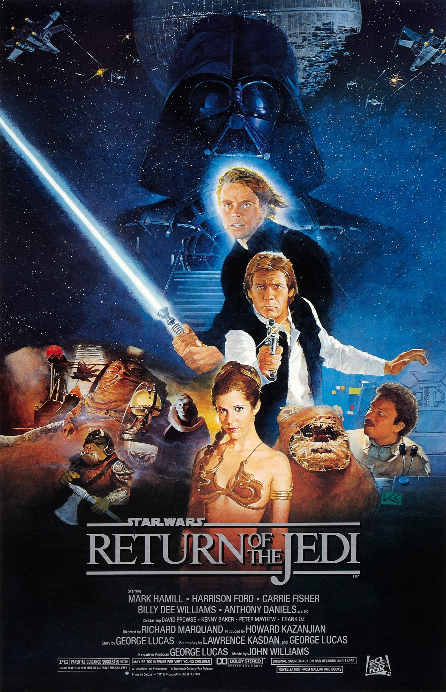
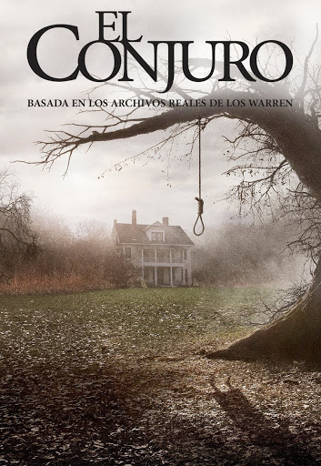
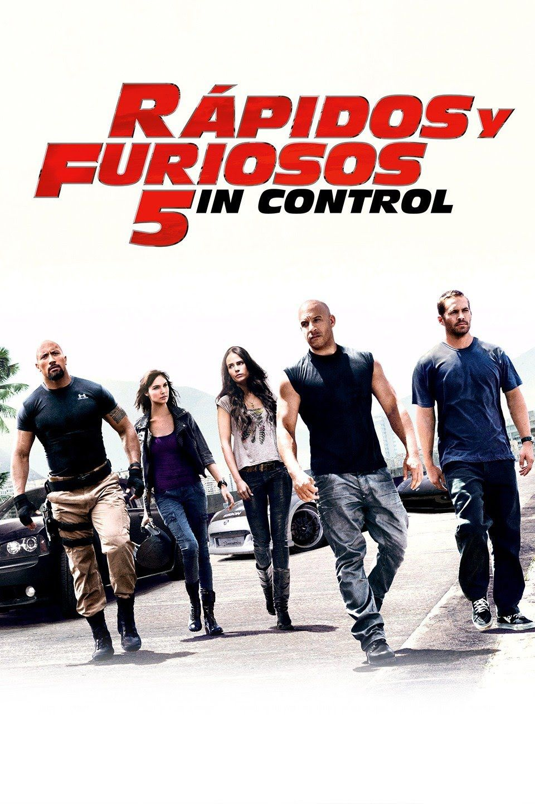
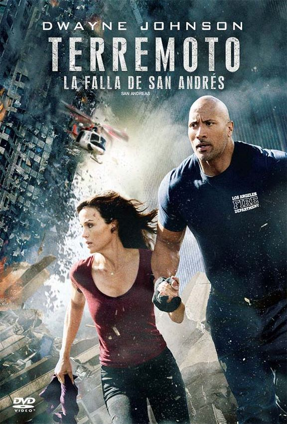
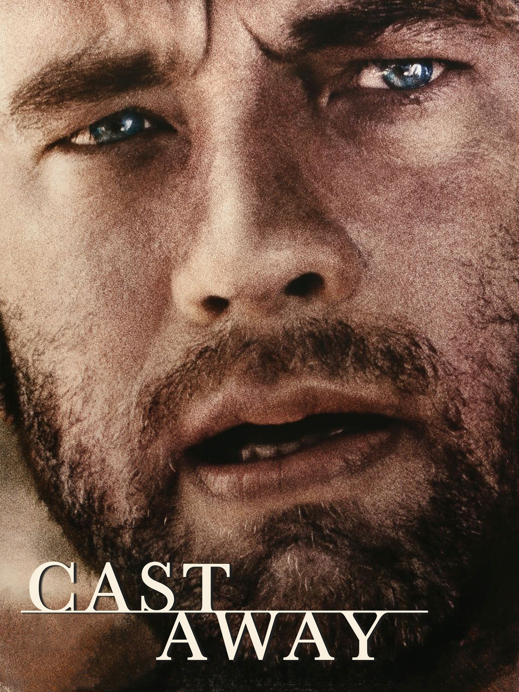
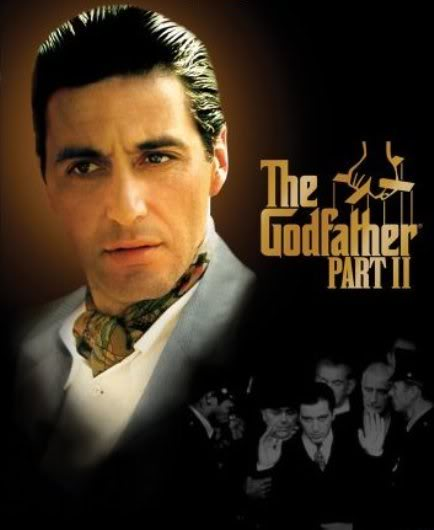
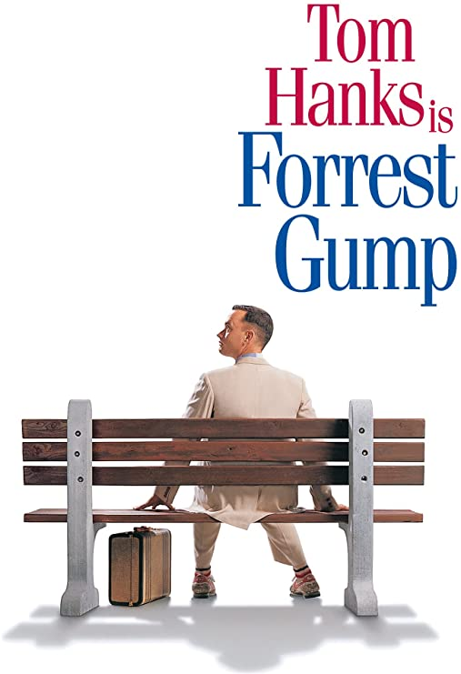
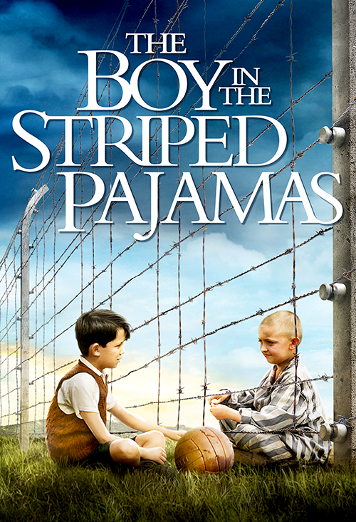

STAR WARS: EPISODIO VI- EL RETORNO DEL JEDI
Ciencia ficción/Fantasía
Fecha de estreno: 25 de mayo de 1983
Duración: 128 minutos (versión original),
135 minutos (edición especial)
Luke Skywalker y la princesa Leia deben viajar a Tatooine para liberar a Han Solo. Para conseguirlo,
deben infiltrarse en la peligrosa guarida de Jabba the Hutt, el gángster más temido de la galaxia.
Una vez reunidos, el equipo recluta a tribus de Ewoks para combatir a las fuerzas imperiales en los
bosques de la luna de Endor. Mientras tanto, el Emperador y Darth Vader conspiran para convertir a
Luke al lado oscuro, pero el joven Skywalker, por su parte, está decidido a reavivar el espíritu del
Jedi en su padre. La guerra civil galáctica culmina en un último enfrentamiento entre las fuerzas
rebeldes unificadas y una segunda Estrella de la Muerte, indefensa e incompleta, en una batalla que
decidirá el destino de la galaxia.

EL CONJURO
Terror
Fecha de estreno: 8 de agosto de 2013 (Argentina)
Duración: 112 minutos
Basada en una historia real documentada por los reputados demonólogos Ed y Lorraine Warren. Narra los
encuentros sobrenaturales que vivió la familia Perron en su casa de Rhode Island a principios de los
70. El matrimonio Warren, investigadores de renombre en el mundo de los fenómenos paranormales,
acudieron a la llamada de esta familia aterrorizada por la presencia en su granja de un ser maligno

RÁPIDOS Y FURIOSOS 5IN CONTROL
Acción
Fecha de estreno: 15 de abril de 2011
Duración: 130 minutos
El ex policia Brian O'Conner (Paul Walker) y el ex preso Dom Toretto (Vin Diesel) colaboran a pesar
de proceder de lados opuestos de la ley. Desde que Brian y Mia Toretto (Jordana Brewster) sacaron a
Dom de la cárcel, han tenido que cruzar muchas fronteras para evitar a la policía. Atrapados en Río
de Janeiro, no les queda más remedio que volver a correr si quieren salir libres. Los insólitos
aliados empiezan a buscar a los mejores corredores, pero saben que la única posibilidad que tienen
de salir del juego de una vez por todas, es enfrentarse al empresario corrupto que quiere verles
muertos. Pero otros también les siguen la pista.El inflexible agente federal Luke Hobbs (Dwayne
Johnson) nunca ha fallado. Le encargan que encuentre a Dom y a Brian, y él y su equipo no
escatimarán medios para conseguirlo. Una vez en Brasil, envía a sus hombres tras la pista, pero no
tarda en aprender que no puede separar a los buenos de los malos. Sólo dependerá de su instinto si
quiere hacerse con su presa... antes de que alguien se le adelante.

SON COMO NIÑOS
Comedia
Fecha de estreno: 22 de julio de 2010 (Argentina)
Duración: 102 minutos
Cinco hombres, que de niños fueron grandes amigos, se vuelven a reunir para pasar juntos el fin de
semana del 4 de julio con sus respectivas mujeres e hijos, después de 30 años sin verse. Durante
esos días retoman la relación en el mismo punto donde lo dejaron tantos años atrás y descubren que
hacerse viejo no significa necesariamente haber madurado.

TERREMOTO: LA FALLA DE SAN ANDRÉS
Acción
Fecha de estreno: 29 de mayo de 2015.
Duración: 114 minutos
La falla de San Andrés acaba cediendo ante las temibles fuerzas telúricas y desencadena un terremoto
de magnitud 9 en California. Ante tal catástrofe, el piloto de helicóptero de búsqueda y rescate Ray
(Dwayne Johnson) y su ex esposa Emma (Carla Gugino) viajan juntos desde Los Ángeles hasta San
Francisco para salvar a su única hija, Blake (Alexandra Daddario). Pero su tortuoso viaje hacia el
norte solamente es el comienzo del desomoronamiento de todo lo que creían firme en su vida.

EL SEÑOR DE LOS ANILLOS: EL RETORNO DEL REY
Ciencia ficción/Fantasía
Fecha de estreno: 1 de enero de 2004 (Argentina)
Duración: 210 minutos
Las fuerzas de Saruman han sido destruidas, y su fortaleza sitiada. Ha llegado el momento de decidir
el destino de la Tierra Media, y, por primera vez, parece que hay una pequeña esperanza. El interés
del señor oscuro Sauron se centra ahora en Gondor, el último reducto de los hombres, cuyo trono será
reclamado por Aragorn. Sauron se dispone a lanzar un ataque decisivo contra Gondor. Mientras tanto,
Frodo y Sam continuan su camino hacia Mordor, con la esperanza de llegar al Monte del Destino.

NÁUFRAGO
Drama
Fecha de estreno: 25 de enero de 2001 (Argentina)
Duración: 144 minutos
Chuck Noland, un ejecutivo de la empresa multinacional de mensajería FedEx, se ve apartado de su
cómoda vida y de su prometida a causa de un accidente de avión que lo deja aislado de la
civilización en una remota isla tropical en medio del océano. Tras cuatro años de lucha por la
supervivencia, completamente solo en la isla, Chuck aprende todas las técnicas de subsistencia
mientras sufre la tortura de la soledad. La solución: arriesgar la vida adentrándose mar adentro.

EL PADRINO II
Drama
Fecha de estreno: 26 de diciembre de 1974 (Argentina)
Duración:202 minutos
Continuación de la historia de los Corleone por medio de dos historias paralelas: la elección de
Michael como jefe de los negocios familiares y los orígenes del patriarca, Don Vito Corleone,
primero en su Sicilia natal y posteriormente en Estados Unidos, donde, empezando desde abajo, llegó
a ser un poderosísimo jefe de la mafia de Nueva York.

FORREST GUMP
Comedia
Fecha de estreno: 6 de octubre de 1994 (Argentina)
Duración:142 minutos
Mientras espera sentado en una parada de autobús, Forrest Gump comienza a relatar la historia de su
vida a diversos extraños que se sientan junto a él. Su narración comienza por la infancia, cuando
tuvo que llevar unos aparatos ortopédicos en las piernas que provocaron el acoso y la burla de otros
niños. Él vivía con su madre en una casa de campo en la que alquilaban habitaciones. Allí Forrest
enseñó a uno de los huéspedes, un joven Elvis Presley, a bailar de una forma peculiar que luego éste
haría mundialmente famosa. En el bus escolar durante su primer día de clase Forrest conoce a Jenny,
de la que se enamora inmediatamente y de la que se hace su mejor amigo.

BOY IN THE STRIPED PAJAMAS
Drama
Fecha de estreno: 12 de septiembre de 2008 (Reino Unido)
Duración: 94 minutos
Bruno, de ocho años, es el hijo mimado de un oficial nazi. Al ascender a su padre, la familia se ve
obligada a abandonar su confortable casa de Berlín y trasladarse a una zona aislada donde el
solitario chico no tiene nada que hacer ni nadie con quien jugar. Muerto de aburrimiento y atraído
por la curiosidad, Bruno hace caso omiso a lo que su madre le dice. No debe ir más allá del jardín
bajo ninguna circunstancia. Pero el no le hace caso y se dirige hacia la 'granja' que ha vislumbrado
en la distancia. Allí conoce a Shmuel, un chico de su edad que vive una extraña y paralela
existencia al otro lado de una alambrada. El encuentro de Bruno con el chico del pijama de rayas le
lleva a adentrarse de la forma más inocente en el mundo de adultos que les rodea. Entabla una
amistad con Shmuel con terribles consecuencias.